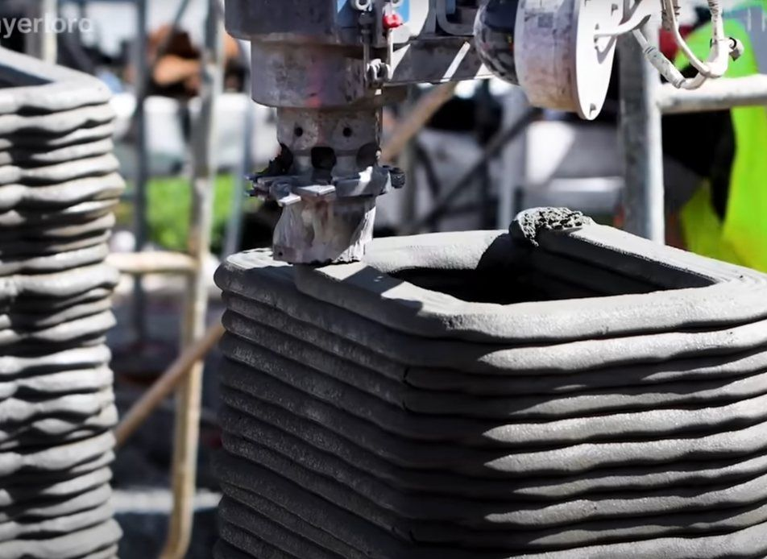
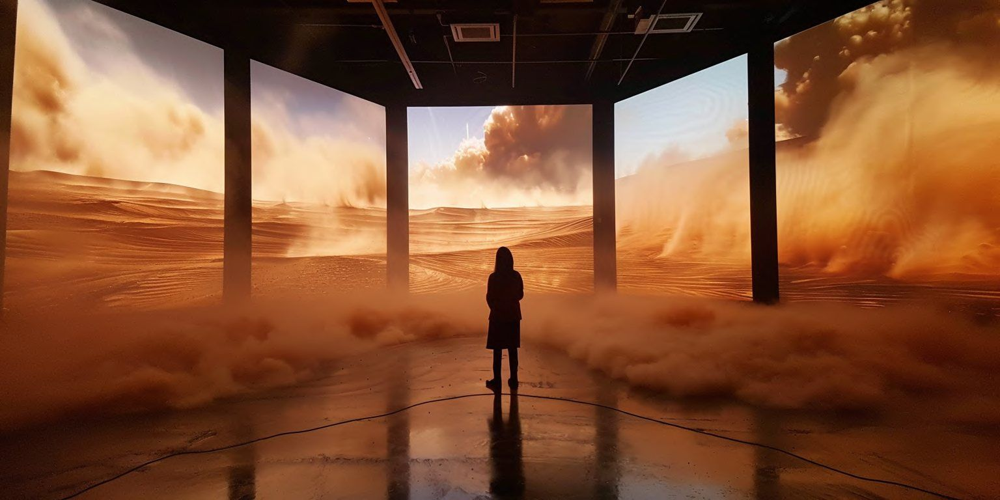
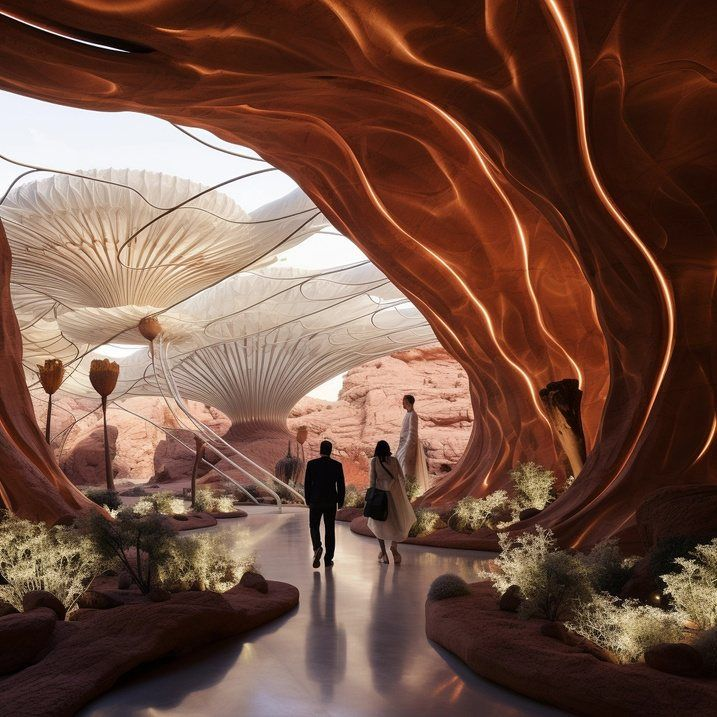
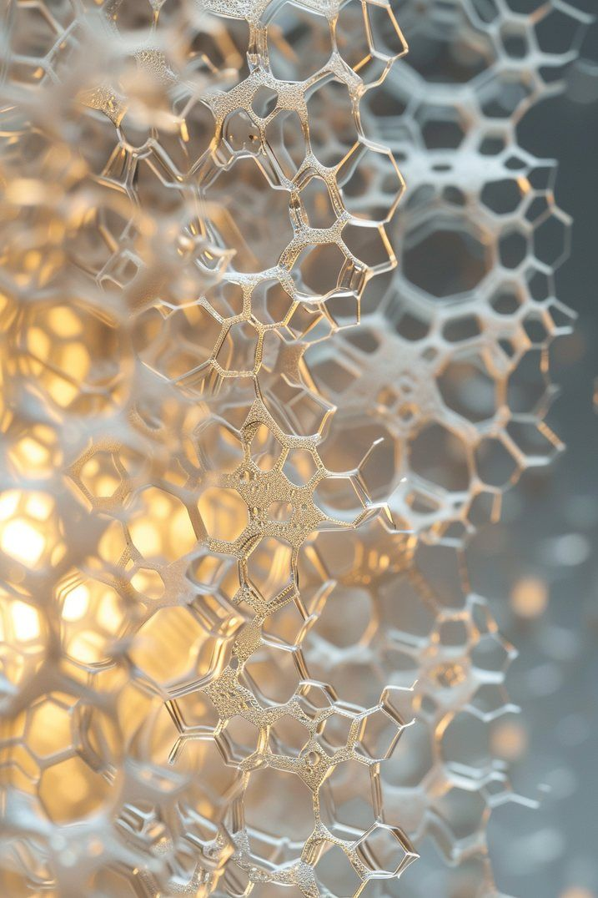
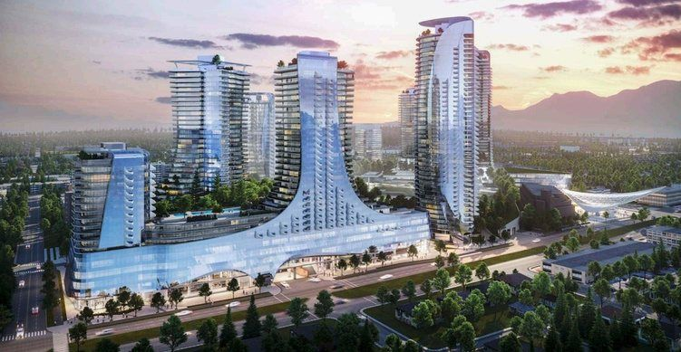
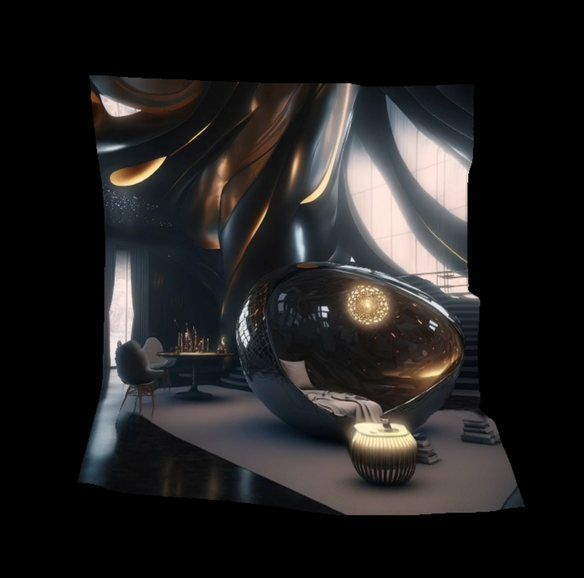
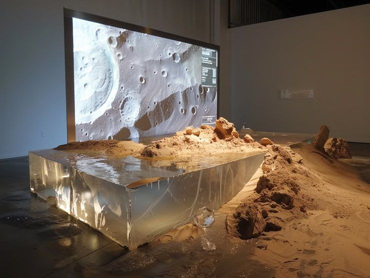

Awarded a 2-year research grant from the Government of Canada for advancing 3D-printed housing.

The human future, made visible
Artist · Architect · Researcher
Katlyn Glenn is a research-driven artist focused on innovation and its impact on society. With a background spanning art, architecture and technology, she transforms ideas, data and science into contemporary artworks that invite curiosity, reflection and conversation within architectural spaces.
Explorations of a future landscape
This ongoing body of work explores Mars as both a physical place and a cultural idea, investigating discovery, scientific advancement and humanity's evolving role in shaping the future.
The collection spans modular installations, collectible works and large-scale commissions. Mars Artifacts imagines objects on Mars and their relationship to Earth today.
Matter · Energy · Structure
Universal Matter investigates the systems that shape our universe, drawing from geology, astronomy, architecture and scientific observation.
Paintings, sculptural objects and works on paper that blur the boundaries between art and research: an imagined cultural archive of our place in something larger than ourselves.
Mars & blockchain
Digital paintings and environments that respond in real time to data from Mars and from the blockchain.
Public installations
Future collections will expand into large-scale installations and institutional commissions.
Every body of work begins as research: from 3D-printed housing and smart materials to how we might build and live on Mars.

Awarded a 2-year research grant from the Government of Canada for advancing 3D-printed housing.

Researched how AI and biomimicry concepts can inspire Mars habitat construction.

Researched and developed new sunlight-reactive smart materials.

Contributed to the design of the largest development in North America.

Developed a process to integrate AI-generated imagery into 3D assets in Unreal Engine.
Topics in the work
Large scale
Site-specific artworks, public installations and live-data environments for developers, institutions, governments and private collectors. Each work connects a place to the future.
Landmark sculpture for public and civic spaces.
Designed with the building and the place from the start.
Such as Mars Now, a room that mirrors real-time conditions on Mars.
Bespoke works for residences and collections.

Project · In development · Dubai
A large-scale cultural commission connecting art, science and Dubai's vision for the future.
A research-driven artist focused on innovation and its impact on society. With a background spanning art, architecture and technology, Katlyn is on a mission to connect the public to the innovations shaping our future, turning science, data and research into contemporary art that sparks curiosity and conversation.
Born
Canada
Lives
Dubai
Focus
The future
For artworks, commissions, exhibitions and press.
Phone
+971 58 549 4259Studio
Dubai, UAEContact card
Save my contact details